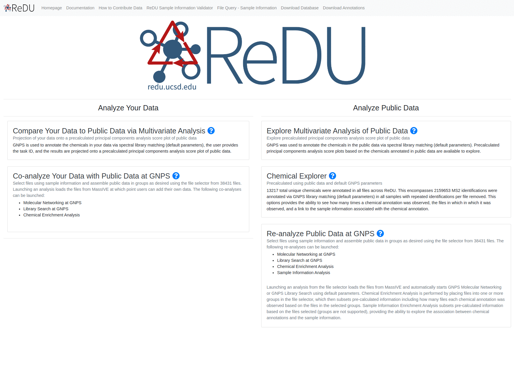

Analyze Your Data: Re-analyze Your Data with Public Data at GNPS
Multivariate Analysis of Selected Files
Summary
The Launch PCA of Selected Files function allows the user to perform mulivariate analysis on a subset of files. First, the user selects samples based on sampel information category (i.e. MassSpectrometer) through the file filtration interface. A single button click on "Launch PCA of Selected Files" loads all the files and calcualte the principal coordinate analysis values per sample, which then displays via a 3D Emperor visualization.
Tutorial
- Navigate to the ReDU homepage.
- Click on Re-analyze Public Data at GNPS or Co-analyze Your Data with Public Data at GNPS.
- Select the files you wish to include in the analysis by clicking the desired group button (i.e. G1-G6).
- The orange buttons in the center of the screen correspond to Sample Information categories.
- If filter/s are used, they will appear as red box/boxes in the Attribute Filters Panel (upper-right corner) of the page. To remove already selected filters click on the red boxed filter you wish to remove and the item should disappear from Attribute Filters Panel.
- When files are selected into a group the corresponding button becomes red and the number of files is updated in the Selection Summary Panel (upper-left corner).
- Click on the Launch PCA of Selected Files button (blue) at the bottom of the page.

__
Notes:
- The addtion of files to groups (G1-G6) will not affect the analysis in any way, and will not be included in the visualization.